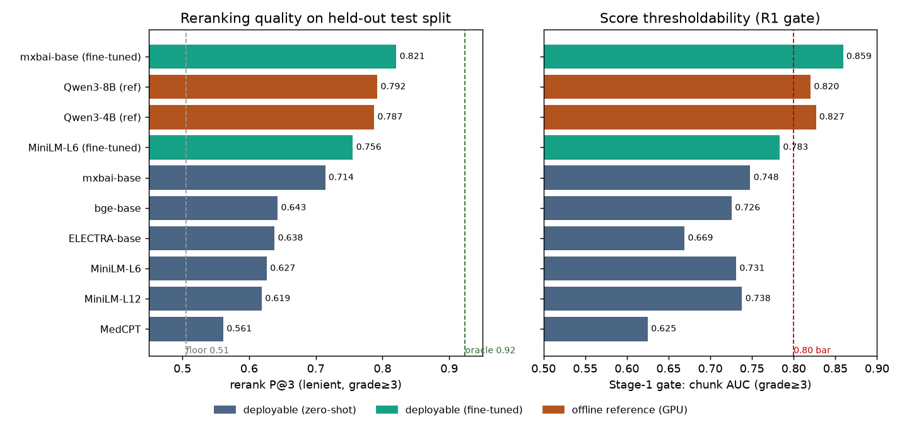

.tflite + on-device tokenizer were verified to
reproduce the offline model exactly. Final deployable choice:
fine-tuned MiniLM-L6. But end-to-end, the offline win does not carry: with
the actual on-device generator (Gemma 4 E4B), reranking does not
improve kenya SAQ answers, and a relevance diagnostic (judging each arm's kenya top-3
with the original Qwen3-32B grader) shows why — reranking doesn't improve
kenya retrieval either (gecko is the best arm; P@3 0.277 vs
0.19–0.26). So this is a distribution-transfer failure, not a model ceiling:
the reranker's mamaretrieval gain (P@3 0.51→0.76) doesn't generalize to kenya, and the
low absolute relevance across all arms points to a corpus-coverage
bottleneck. Recommendation: do not ship the reranker for kenya; any
retriever/embedder change must be validated on the deployment queries, not just
mamaretrieval. (An earlier +12% claim used the wrong generator, gemma3n-e4b,
and is retracted.)
The whole investigation in one grid: every first-stage retriever (Gecko / BM25 / Hybrid) crossed with every fine-tuned reranker (none / MiniLM-L6-ft / mxbai-base-ft), read left-to-right from the offline audit metric to the deployment end-to-end metrics. Offline = mamaretrieval test (491 q, Qwen3-32B grades). kenya retrieval = top-3 relevance P@3 on the 312 deployment queries (Qwen3-32B, V2 rubric). kenya answer = SAQ key-fact recall (Gemma 4 E4B → gpt-oss-120b). healthbench = oss_eval rubric (1209 multi-turn, Gemma 4 E4B → gpt-oss-120b), split into completeness (+ criteria met) and penalty (− criteria triggered, ↓ better).
| retriever → reranker | offline (mamaret.) | kenya retr. | kenya ans. | healthbench-oss (rubric) | |||
|---|---|---|---|---|---|---|---|
| P@3 | gateAUC | P@3 rel | SAQ recall | overall | compl.(+) | pen.(−)↓ | |
| Gecko · none (deployed) | 0.485 | 0.580 | 0.269 | 0.125 | −0.004 | 0.173 | 0.371 |
| Gecko · +MiniLM-ft | 0.720 | 0.783 | 0.244 | 0.118 | −0.004 | 0.179 | 0.378 |
| Gecko · +mxbai-ft | 0.794 | 0.862 | 0.279 | 0.125 | +0.002 | 0.182 | 0.374 |
| BM25 · none | 0.405 | 0.604 | 0.063 | 0.109 | +0.000 | 0.177 | 0.368 |
| BM25 · +MiniLM-ft | 0.658 | 0.833 | 0.064 | 0.102 | −0.005 | 0.173 | 0.370 |
| BM25 · +mxbai-ft | 0.722 | 0.904 | 0.079 | 0.117 | +0.001 | 0.179 | 0.372 |
| Hybrid · none (R2a) | 0.506 | 0.679 | 0.201 | 0.112 | −0.007 | 0.174 | 0.376 |
| Hybrid · +MiniLM-ft | 0.756 | 0.783 | 0.194 | 0.111 | −0.008 | 0.172 | 0.378 |
| Hybrid · +mxbai-ft | 0.821 | 0.859 | 0.255 | 0.113 | +0.003 | 0.184 | 0.372 |
Read across any row and the thesis is unmistakable: offline P@3 ranges 0.41 → 0.82 (a 2× spread driven by reranking), but every deployment column is essentially flat — kenya answer recall ~0.11–0.13 regardless of config, healthbench overall ~0. The gains are real and large where they're measured (the audit set) and evaporate where they're used. Specifics:
491 test queries (frozen by-query split), reranking the hybrid (Gecko+BM25 RRF) top-20 pool, all scored at the deployed seq-len (256) so the table is apples-to-apples and deployment-relevant. P@3 = mean relevant-in-top-3 (lenient grade≥3); gate AUC = chunk-level AUC for grade≥3, i.e. how thresholdable the model's score is (the R1 question). Floor = the RRF order with no reranking; oracle = reorder by true grade.

| model | params | P@3 lenient | HR@3 | P@3 strict | gate AUC (≥3) | deploy |
|---|---|---|---|---|---|---|
| floor — RRF hybrid, no rerank | — | 0.506 | 0.857 | 0.202 | — | R2a baseline |
| MedCPT (medical-domain) | 109M | 0.561 | 0.882 | 0.236 | 0.625 | ✓ |
| MiniLM-L12 | 33M | 0.619 | 0.918 | 0.271 | 0.738 | ✓ |
| MiniLM-L6 (currently deployed) | 23M | 0.627 | 0.918 | 0.276 | 0.731 | ✓ |
| ELECTRA-base | 110M | 0.638 | 0.945 | 0.276 | 0.669 | ✓ |
| bge-reranker-base | 278M | 0.643 | 0.937 | 0.282 | 0.726 | ✓ |
| mxbai-rerank-base (best zero-shot) | 184M | 0.714 | 0.963 | 0.312 | 0.748 | ✓ |
| MiniLM-L6 — fine-tuned (159k pairs) | 23M | 0.756 | 0.959 | 0.380 | 0.783 | ✓ chosen |
| Qwen3-Reranker-4B (offline ref) | 4B | 0.787 | 0.980 | 0.369 | 0.827 | ✗ too big |
| Qwen3-Reranker-8B (offline ref) | 8B | 0.792 | 0.984 | 0.369 | 0.820 | ✗ too big |
| oracle — perfect rerank | — | 0.924 | 0.988 | 0.536 | — | ceiling |
Reading the table:
We fine-tuned the deployed MiniLM-L6 on all 158,993 graded (query, chunk) pairs for the train-split queries (regression on grade/6, 2 epochs, DEV-selected, held-out TEST evaluated — no test query ever seen), then re-scored the same test pool. Training took 149 s on one H200.
| model | params | P@3 len | P@3 strict | HR@3 | AUC ≥3 | AUC ≥5 |
|---|---|---|---|---|---|---|
| MiniLM-L6 zero-shot | 23M | 0.627 | 0.276 | 0.918 | 0.731 | 0.647 |
| MiniLM-L6 fine-tuned (deployable) | 23M | 0.756 | 0.380 | 0.959 | 0.783 | 0.757 |
| mxbai-base zero-shot | 184M | 0.714 | 0.312 | 0.963 | 0.748 | 0.667 |
| mxbai-base fine-tuned (size upgrade) | 184M | 0.821 | 0.420 | 0.978 | 0.859 | 0.857 |
| Qwen3-8B (offline ref) | 8B | 0.792 | 0.369 | 0.984 | 0.820 | — |
Two findings:
The in-app reranker is the int8 .tflite driven by a hand-ported
Kotlin WordPiece tokenizer. We ran the actual deployed artifact
(reranker_minilm_l6_int8.tflite) locally over all 9,820 test pairs,
fed by both the HuggingFace tokenizer and a faithful Python port of the Kotlin
tokenizer, at the deployed seq-len 256.
| check | result |
|---|---|
| Tokenizer exact-match (Kotlin-port vs HF), per pair | 9,817 / 9,820 = 99.97% |
| Token-position disagreement rate | 3.1e-5 (49 / 1.6 M) |
| Score parity through the tflite (Kotlin vs HF): Pearson r | 1.000 |
| Top-3 set agreement (Kotlin vs HF) | 1.000 |
| Deployed quality (tflite-int8 + Kotlin tok): P@3 lenient | 0.626 |
| Offline torch-fp32 @256 reference: P@3 lenient | 0.627 |
The deployed int8 model + on-device tokenizer reproduce the offline fp32 model to within 0.001 P@3 and are rank-identical. The "approximate tokenizer parity" caveat from the spike is closed: conversion (fp32→int8→LiteRT) and the tokenizer port are both faithful, and the deployed reranker is trustworthy. Note: this verifies the zero-shot MiniLM-L6 that is currently on-device; deploying the fine-tuned weights requires re-running the same (proven, architecture-identical) conversion + this parity check on the new checkpoint.
Everything above is retrieval-quality evidence. The R2 standing rule is to
validate end-to-end. Three arms isolate the effect, generated with Gemma 4
E4B (the actual on-device generator — app_config.json
llm_model = gemma-4-E4B-it.litertlm) over the same questions:
Judged by the pinned gpt-oss-120b on key-fact recall / refusal / safety (SAQ: kenya + afrimedqa_saq), plus MCQ accuracy (afrimedqa, auto-scored — does the −1.8 pp RAG gap close?).
Result (Gemma 4 E4B — the actual on-device generator) — the offline retrieval win does not translate end-to-end. Two fine-tuned rerankers are tested as arm C against the same gecko/hybrid baselines (key-fact recall for SAQ, accuracy for MCQ; n in header):
| arm | kenya rec (312) | afrimedqa_saq rec (37) | MCQ acc (534) | refusal (kenya) | harm (kenya) |
|---|---|---|---|---|---|
| A · Gecko top-3 (deployed) | 0.125 | 0.157 | 0.481 | 0.000 | 0.186 |
| B · hybrid top-3 (RRF, isolates fusion) | 0.112 | 0.123 | 0.524 | 0.000 | 0.199 |
| C · hybrid+rerank, MiniLM-L6-ft | 0.111 | 0.171 | 0.521 | 0.006 | 0.151 |
| C · hybrid+rerank, mxbai-base-ft | 0.113 | 0.208 | 0.536 | 0.003 | 0.199 |
Reading the corrected result honestly:
The value gate left one question: is the reranked kenya context actually more relevant (so the bottleneck is Gemma 4 not using it — a model ceiling), or just different and not better (the reranker doesn't transfer to kenya)? kenya retrievals had no relevance labels, so we judged each arm's top-3 directly with the same rubric and judge (Qwen3-32B) that produced the 230k grades — 2,691 (query, chunk) pairs.
| arm (top-3 relevance) | kenya P@3 (≥3) | kenya mean grade /6 | afrimedqa_saq P@3 (≥3) |
|---|---|---|---|
| A · gecko (deployed) | 0.277 | 1.49 | 0.477 |
| B · hybrid (RRF) | 0.204 | 1.09 | 0.423 |
| C · rerank MiniLM-L6-ft | 0.192 | 1.03 | 0.531 |
| C · rerank mxbai-base-ft | 0.264 | 1.45 | 0.649 |
| (offline mamaretrieval, for contrast) | 0.51→0.76 | — | — |
The answer is unambiguous: on kenya, reranking does NOT improve retrieval relevance — gecko (the deployed retriever) is the best arm. So this is no-transfer, not a model ceiling: the reranked context genuinely isn't more relevant, which is exactly why the answers didn't improve. The reranker's strong mamaretrieval gain (P@3 0.51→0.76) simply does not generalize to the kenya query distribution. Three things fall out:
The generator bug left a silver lining: a clean A/B of the two generators. The
buggy first run used gemma3n-e4b, the corrected run gemma4-e4b
— over the same questions with identical RAG contexts per arm (gecko /
hybrid / minilm-ft) and the same gpt-oss-120b judge, so only the generator differs.
Both are Q4_0. The pattern below is consistent across all three arms; the deployed
gecko arm is shown.
| metric (gecko arm) | Gemma 3n | Gemma 4 | better |
|---|---|---|---|
| kenya SAQ key-fact recall (n=312) | 0.256 | 0.125 | 3n (≈2×) |
| afrimedqa_saq recall (n=37) | 0.277 | 0.157 | 3n |
| afrimedqa MCQ accuracy (n=534) | 0.532 | 0.481 | 3n (slight) |
| kenya harm rate (lower = safer) | 0.324 | 0.186 | 4 (≈½) |
| kenya refusal rate | 0.029 | 0.000 | 4 |
It's a completeness-vs-safety trade, not a clear win either way. Gemma 3n produces far more complete answers — roughly 2× the key-fact recall on kenya SAQ across every arm, and slightly better MCQ — but at ~2× the harm rate. Gemma 4 is markedly safer (half the harm, near-zero refusal) but conservative, leaving more key facts out. This also explains why reranking helped under gemma3n but not gemma4: Gemma 4 sits at a much lower recall operating point, so the marginal retrieval gain has little room to surface, whereas higher-recall Gemma 3n had headroom. The device's move to Gemma 4 reads as a deliberate recall-for-safety trade — worth surfacing to whoever owns the generator choice, since "more recall" is not unambiguously better for a medical assistant.
results/retrieval_eval/r2c-rerank/candidates/*.jsonresults/retrieval_eval/r2c-rerank/finetune/minilm-l6-finetuned.jsonresults/retrieval_eval/r2c-rerank/candidates/parity.jsonresults/end_to_end_eval/value_gate_g4/{gecko,hybrid,hybrid_rerank,hybrid_rerank_mxbai}/run/*.jsonreports/r2c-rerank/kenya_relevance.json · scripts retrieval_eval/judge_kenya_relevance.py, _kenya_rubric.pyretrieval_eval/{score_candidates,finetune_reranker,check_parity,precompute_rerank_arms,value_gate_summary}.pycluster/run_cluster_{rerank_compare,finetune,rerank_arms,value_gate,value_gate_judge}.sh